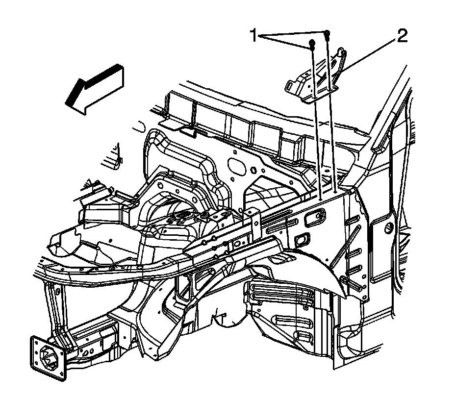

Hood Hinge: Service and Repair
Hood Hinge Replacement
Removal Procedure
1. Open and support the hood.
2. Using a wax pencil, scribe the location of the hood hinge on the hood.
3. Apply tape to corners of panel and adjacent surfaces to help prevent paint damage.

4. Remove the hood. Refer to Hood Replacement (Service and Repair) .
5. Remove the fender. Refer to Front Fender Replacement (Service and Repair) .
6. Remove the bolts (1) that secure the hinge to the motor compartment.
7. Remove the hinge from the vehicle.
Installation Procedure
1. Install the hinge to the vehicle.
Notice: Refer to Fastener Notice (Fastener Notice) .
2. Install the bolts (1) in order to secure the hinge to the motor compartment.
Tighten the bolts to 25 N.m (18 lb ft).
3. Install the hood. Refer to Hood Replacement (Service and Repair) .
4. Install the fender. Refer to Front Fender Replacement (Service and Repair) .
5. Close the hood and inspect for fit.
6. Adjust the hood as necessary. Refer to Hood Adjustment (Adjustments) .
7. Remove the tape from the panel and adjacent surfaces.